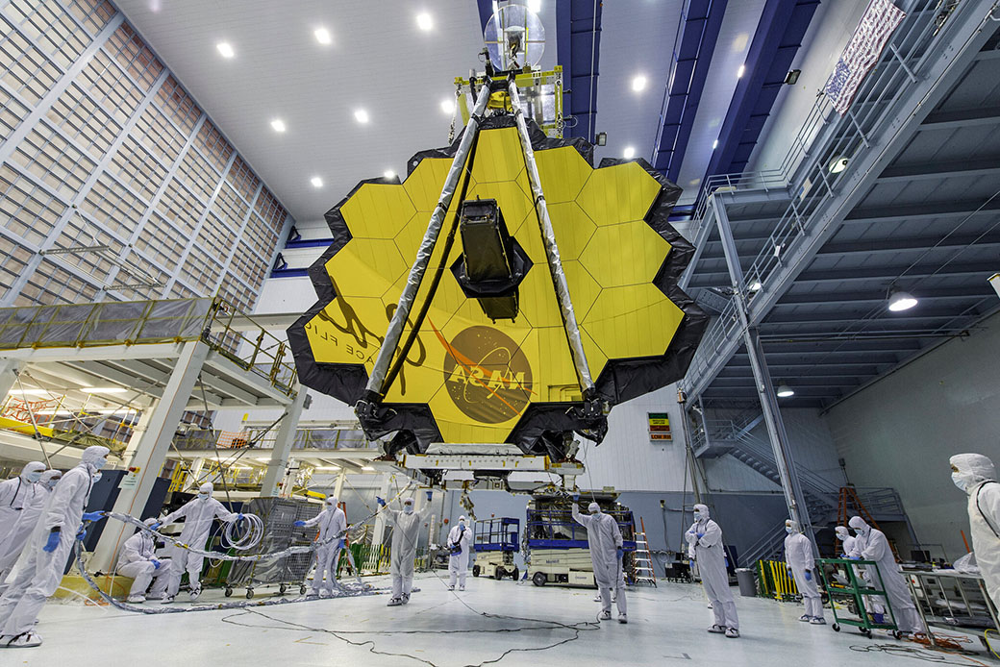

Toggle navigation
Astrophysics!
Home
What is Astrophysics?
Famous People
Why I Like It
Back to the Assignments Page
Astrophysics!
Learn about astrophysics and why I enjoy it!
More in-depth information
Some cool pictures!
The Milky Way
The telescope at Kitt Peak National Observatory

The James Webb Telescope
Previous
Next